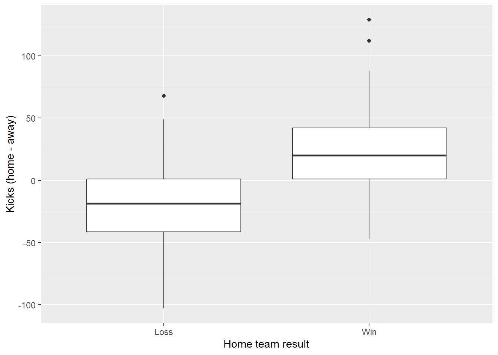
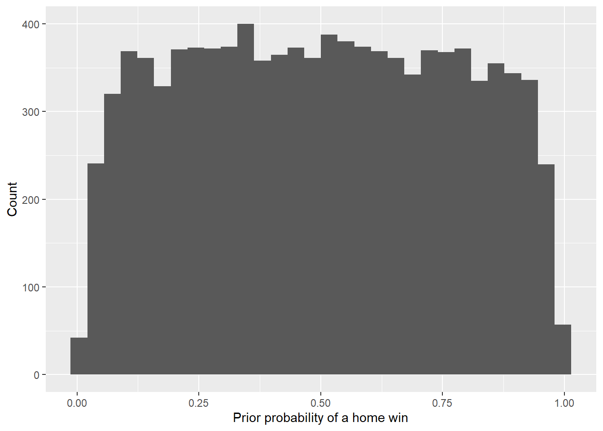
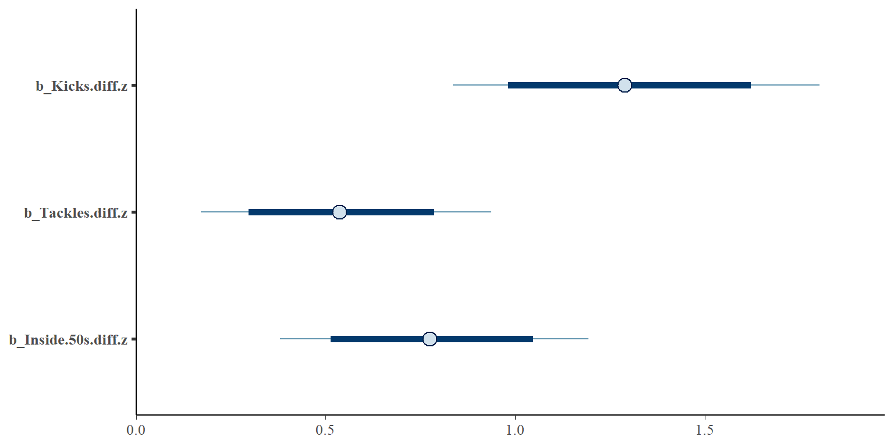
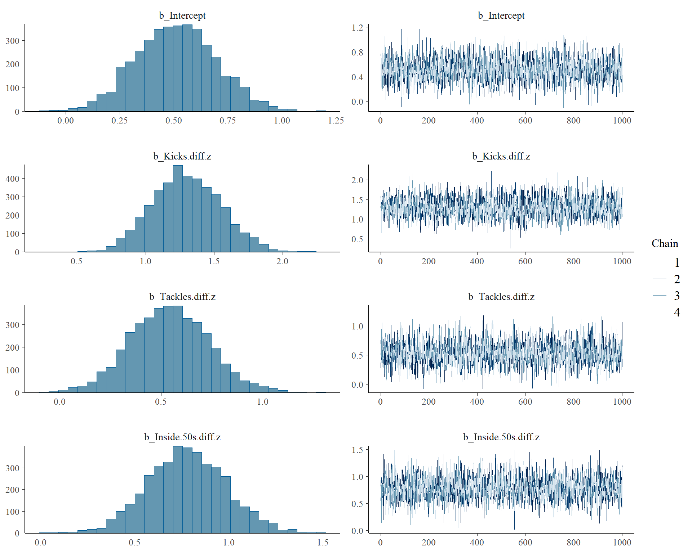
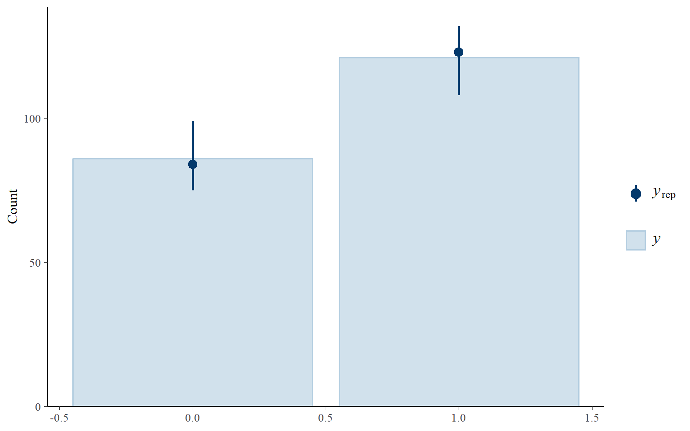
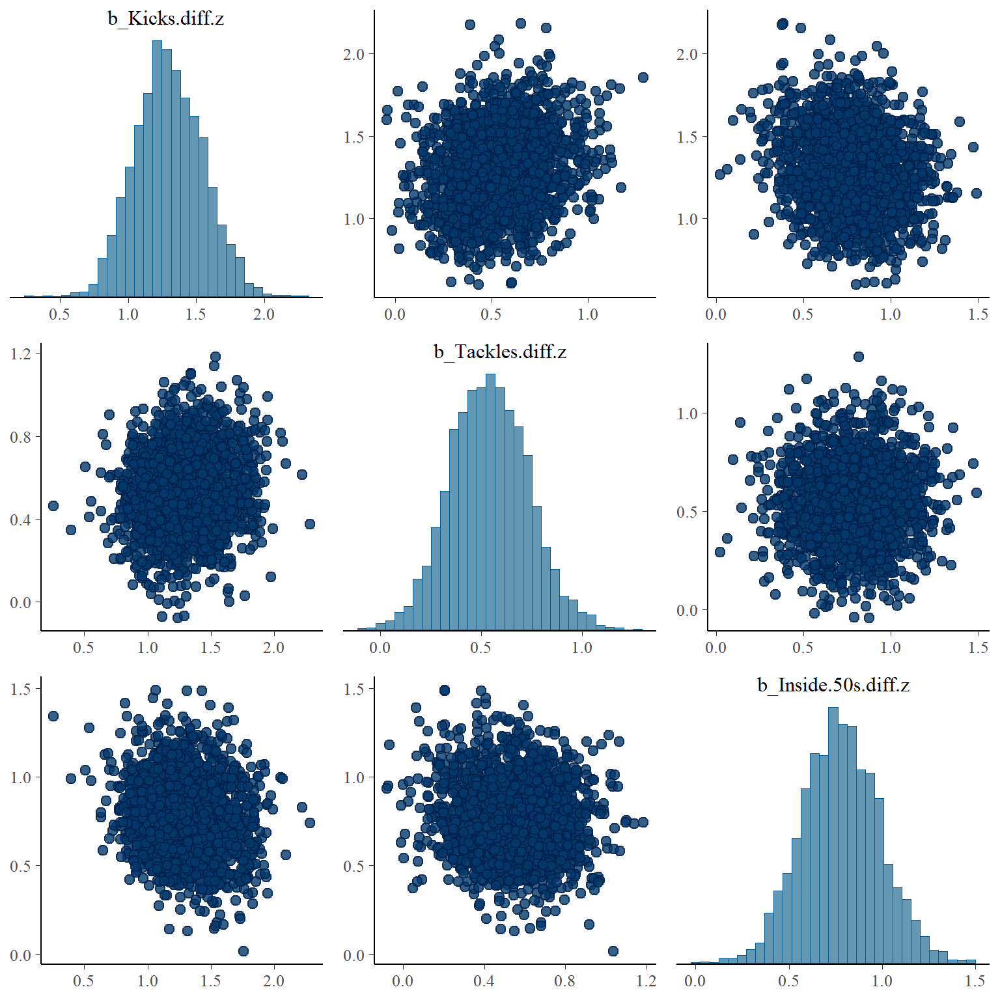
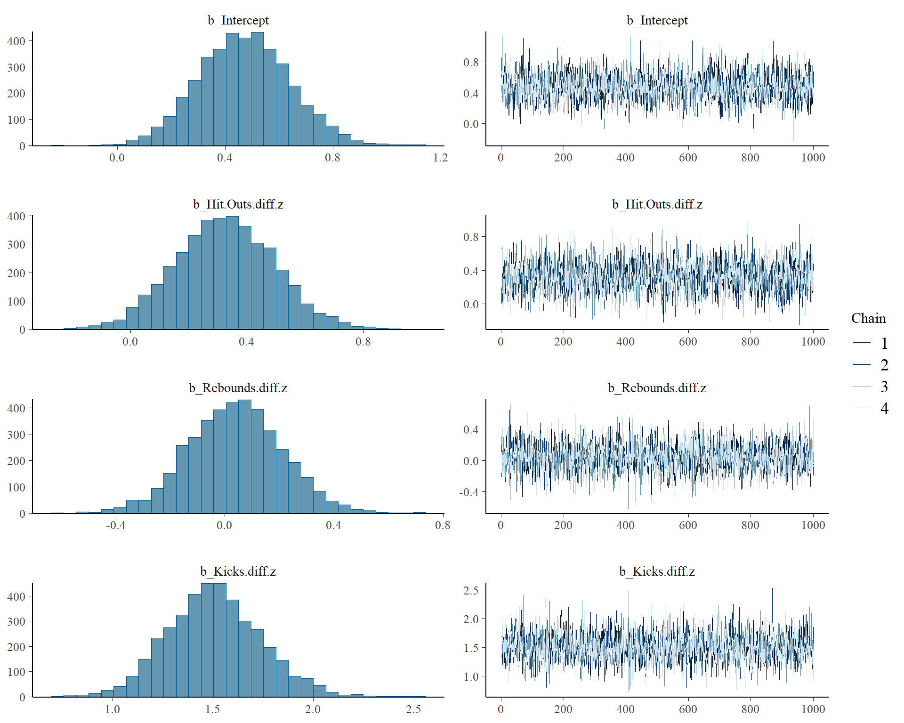
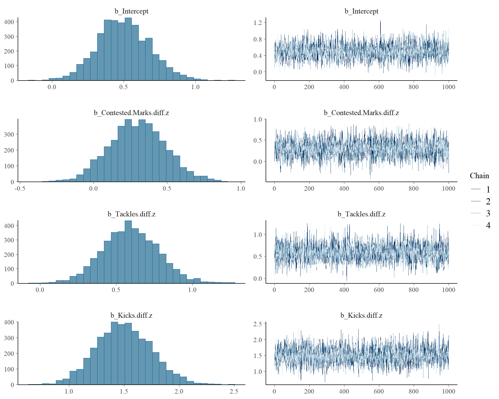
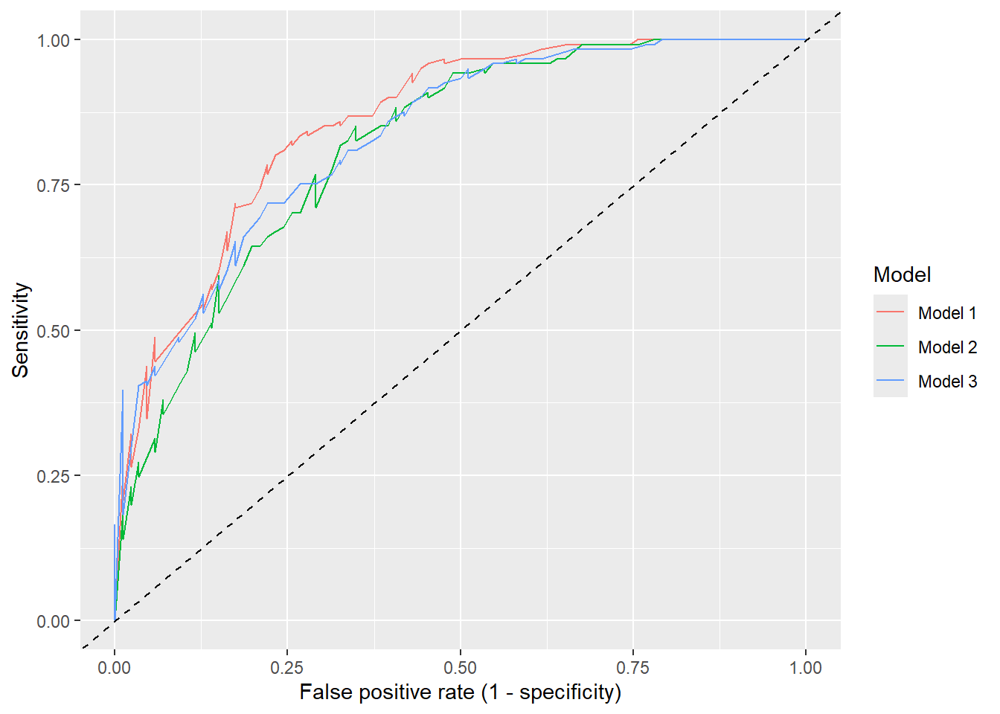

library(dplyr)
library(tidyr)
library(ggplot2)
library(patchwork)
library(brms)
library(bayesplot)
library(posterior)Week 12
Bayesian Models
Overview
Last week you used 2026 AFL match data and logistic regression to ask:
Which team statistics are good predictors of whether the home team wins?
This week we ask the same question and use the same data and the same structure, but we fit the models the Bayesian way using the brms package.
You will build three different models, each with exactly three predictors, and then decide which one you would trust most.
By the end you should be able to:
- Choose weakly informative priors on the log-odds scale and explain what they imply.
- Fit a Bayesian logistic regression using
brm(). - Interpret posterior distributions, credible intervals and odds ratios.
- Make posterior probability statements about coefficients.
- Check that the sampler has converged and that the model reproduces the data (posterior predictive checks).
- Compare models using leave-one-out cross-validation (
loo). - Build confusion matrices and classification metrics, and make predictions for games the models have never seen.
- Compare the Bayesian results to last week’s frequentist results.
NoteWhat changes from last week?
The model is still a logistic regression: the log-odds of a home win is a linear function of the predictors. What changes is how we treat the coefficients.
| Frequentist (Week 11) | Bayesian (Week 12) | |
|---|---|---|
| Coefficients | Fixed, unknown numbers | Random variables with a distribution |
| Starting point | None | A prior distribution |
| Result | One best estimate and a confidence interval | A full posterior distribution |
| Interval | 95% confidence interval | 95% credible interval |
| Function | glm() |
brm() |
Instead of a single estimate for each coefficient we get thousands of plausible values (posterior draws), generated by an MCMC sampler. Everything we report is a summary of those draws.
NoteWhy
brm()?
brm() uses almost the same formula syntax as glm(), so your Week 11 knowledge transfers directly. The family is bernoulli() (one binary outcome per game) and the default link is the logit, exactly as before.
Fitting a model compiles Stan code the first time, so each brm() call can take a minute or more. This is normal.
Setting up the project
1. Load packages
2. Download the data
We use the same two data sets from the 2026 AFL season as last week:
| Games | Role | CSV |
|---|---|---|
| Regular season (home and away rounds) | Training data: used to build and compare your models | |
| The finals series | Test data: kept aside to see how well your models predict new games |
Each row is one match. In the regular season file, columns starting with Home. and Away. hold the team totals for that game, and the columns ending in .diff are the home team’s total minus the away team’s total.
WarningDon’t peek at the test data
You will not use the finals data until later. Choosing your variables by looking at the finals results would defeat the purpose of a test set.
3. Load the data
Read the data into R and call the files afl_train and afl_test:
afl_train <- ...
afl_test <- ...
WarningAvoid leaking the answer
Win is calculated from Margin, so neither Margin nor the team scores can be used as predictors. They would “predict” the result perfectly because they are the result. Stick to the match statistics (the .diff variables).
Tasks (Bayesian Logistic Regression)
NoteQuestion 1
Create the binary response variable Win in both the training and test data, using Margin and case_when(). A game is a "Win" if the home team’s margin is positive. Draws count as a "Loss". Then check how many games the home team won in the training data.
afl_train <- afl_train |>
mutate(
Win = case_when(... ~ "Win",
TRUE ~ ...),
Win = factor(Win, levels = c("Loss", "Win"))
)
afl_test <- afl_test |>
mutate(
Win = case_when(... ~ "Win",
TRUE ~ ...),
Win = factor(Win, levels = c("Loss", "Win"))
)
table(afl_train$Win)What proportion of regular season games were won by the home team? Keep this number in mind, because it gives us a baseline to beat later.
ImportantClick for solution
afl_train <- afl_train |>
mutate(
Win = case_when(Margin > 0 ~ "Win",
TRUE ~ "Loss"),
Win = factor(Win, levels = c("Loss", "Win"))
)
afl_test <- afl_test |>
mutate(
Win = case_when(Margin > 0 ~ "Win",
TRUE ~ "Loss"),
Win = factor(Win, levels = c("Loss", "Win"))
)
table(afl_train$Win)
Loss Win
86 121 mean(afl_train$Win == "Win")[1] 0.5845411If you always predicted a home win you would be right about this proportion of the time, so a useful model has to beat that.
The factor levels matter: a binary model treats the first level ("Loss") as the failure and the second level ("Win") as the success, so the model predicts the probability of a home win.
NoteQuestion 2
Explore the data. Pick a few variables and see how they differ between games the home team won and games it did not.
ImportantClick for solution
You could make summary statistics, figures, etc. As an example, compare the distribution of Kicks.diff for wins and losses:
ggplot(afl_train, aes(x = Win, y = Kicks.diff)) +
geom_boxplot() +
labs(x = "Home team result", y = "Kicks (home - away)")
If a variable is useful, the two boxes should be shifted relative to each other.
NoteQuestion 3
Standardising the predictors
The .diff variables are measured on very different scales. A difference of 10 kicks is small, but a difference of 10 tackles is large. This matters for Bayesian models, because a prior is a statement about the size of a coefficient, and the size of a coefficient depends on the units of its variable.
We will standardise every .diff variable (subtract the mean, divide by the standard deviation) so that each coefficient means “the change in log-odds for a 1 standard deviation increase”. Then one prior can sensibly be used for all of them.
The code below creates a new column for each .diff variable with the suffix .z. Run it, then answer:
- Why do we standardise the test data using the training data’s mean and standard deviation, rather than the test data’s own?
- What is the interpretation of the intercept now?
# Training data: use its own mean and sd
afl_train <- afl_train |>
mutate(across(ends_with(".diff"),
~ (.x - mean(.x)) / sd(.x),
.names = "{.col}.z"))
# Test data: use the TRAINING mean and sd
afl_test <- afl_test |>
mutate(across(ends_with(".diff"),
~ (.x - mean(afl_train[[cur_column()]])) / sd(afl_train[[cur_column()]]),
.names = "{.col}.z"))
ImportantClick for solution
The test games are meant to represent new games we have not seen yet. In real life, we would not know the mean and standard deviation of a future set of games, so we must use the numbers we learned from the training data. Using the test data’s own mean and standard deviation would leak information from the test set into our predictions.
The intercept is the log-odds of a home win when every predictor is at its training average (so the two teams are level, on average, on every statistic). It is the baseline home advantage.
From here on, use the standardised variables, which end in .z (for example Kicks.diff.z).
NoteQuestion 4
Choosing weakly informative priors
A Bayesian model needs a prior for every parameter. A weakly informative prior rules out absurd values but lets the data do most of the work. Our priors are on the log-odds scale, so we need to think about what they imply for probabilities and odds ratios.
Consider these priors:
bayes_priors <- c(
prior(normal(0, 1.5), class = Intercept),
prior(normal(0, 1), class = b)
)- Use the code below to see what the intercept prior implies for the probability of a home win in a game where the teams are level.
- Calculate the 95% prior range of the odds ratio for a 1 standard deviation increase in a predictor, using
exp(qnorm(c(0.025, 0.975), mean = 0, sd = 1)). - Explain in words why these priors are “weakly informative”. What would be a too informative prior for a coefficient? What about a too vague one?
set.seed(2026)
tibble(logodds = rnorm(10000, mean = 0, sd = ...)) |>
mutate(prob = plogis(logodds)) |>
ggplot(aes(prob)) +
geom_histogram(bins = 30) +
labs(x = "Prior probability of a home win", y = "Count")
exp(qnorm(c(0.025, 0.975), mean = 0, sd = ...))
ImportantClick for solution
set.seed(2026)
tibble(logodds = rnorm(10000, mean = 0, sd = 1.5)) |>
mutate(prob = plogis(logodds)) |>
ggplot(aes(prob)) +
geom_histogram(bins = 30) +
labs(x = "Prior probability of a home win", y = "Count")
exp(qnorm(c(0.025, 0.975), mean = 0, sd = 1))[1] 0.1408635 7.0990714plogis() converts log-odds to a probability.
- The intercept prior is centred at a log-odds of 0, which is a 50% chance. It spreads the prior probability across the whole range from near 0 to near 1, so it does not strongly favour any particular home win rate.
- A 95% prior range for the odds ratio of roughly 0.14 to 7.4 means that, before seeing any data, we allow a 1 SD increase in a statistic to cut the odds of winning by about 86% or multiply them by about 7. These are very large effects, so the prior allows big effects without being silly. Effects of more than this are considered unlikely a priori.
- The priors are centred at zero (no effect) and have a moderate spread. They are weakly informative because they only rule out extreme effects. A too informative prior, such as
normal(0, 0.05), would force the coefficients towards zero, and the data would struggle to move them. A too vague prior, such asnormal(0, 100), puts most of its weight on absurd log-odds (a log-odds of 10 is already a 99.995% chance), which can make sampling and predictions less stable.
NoteQuestion 5
Build your first Bayesian model to predict Win. Again, you can only include 3 predictors, and you should use the standardised (.z) versions.
# See what the predictors can be
glimpse(afl_train)bayes1 <- brm(
formula = Win ~ ... + ... + ...,
family = ...,
prior = bayes_priors,
data = ...,
chains = 4,
iter = 2000,
seed = 2026,
refresh = 0
)
ImportantClick for solution
Your models will all be different depending on which variables you pick. As an example, suppose you built a model with Kicks, Tackles and Inside 50s:
bayes1 <- brm(
formula = Win ~ Kicks.diff.z + Tackles.diff.z + Inside.50s.diff.z,
family = bernoulli(),
prior = bayes_priors,
data = afl_train,
chains = 4,
iter = 2000,
seed = 2026,
refresh = 0,
file = "bayes1",
file_refit = "on_change"
)What the arguments do:
family = bernoulli(): a binary response with a logit link, the same model asglm(family = binomial).prior: the priors we chose in Question 4.chains = 4, iter = 2000: four independent MCMC chains of 2000 iterations. By default the first half of each chain is warm-up and is discarded, leaving 4000 posterior draws.seed: makes the results reproducible.file: saves the fitted model so it is not refitted every time you render.file_refit = "on_change"refits it if you change the model or data.
You can check which priors were actually used with prior_summary(bayes1).
NoteQuestion 6
Inspect your model output with summary(), then write down the fitted regression equation using the posterior means from the Estimate column.
summary(...)
ImportantClick for solution
summary(bayes1) Family: bernoulli
Links: mu = logit
Formula: Win ~ Kicks.diff.z + Tackles.diff.z + Inside.50s.diff.z
Data: afl_train (Number of observations: 207)
Draws: 4 chains, each with iter = 2000; warmup = 1000; thin = 1;
total post-warmup draws = 4000
Regression Coefficients:
Estimate Est.Error l-95% CI u-95% CI Rhat Bulk_ESS Tail_ESS
Intercept 0.51 0.19 0.15 0.88 1.00 4434 2885
Kicks.diff.z 1.30 0.25 0.84 1.80 1.00 3874 3239
Tackles.diff.z 0.54 0.19 0.17 0.94 1.00 3379 2615
Inside.50s.diff.z 0.78 0.21 0.38 1.19 1.00 3615 3175
Draws were sampled using sampling(NUTS). For each parameter, Bulk_ESS
and Tail_ESS are effective sample size measures, and Rhat is the potential
scale reduction factor on split chains (at convergence, Rhat = 1).The columns are:
- Estimate: the posterior mean of the coefficient.
- Est.Error: the posterior standard deviation (how uncertain we are).
- l-95% CI, u-95% CI: the 95% credible interval.
- Rhat, Bulk_ESS, Tail_ESS: convergence diagnostics (see Question 9).
Substitute the estimates into the equation, for example (using your own numbers):
\[ \log\left(\frac{\hat{p}}{1-\hat{p}}\right) = \hat{\beta}_0 + \hat{\beta}_1 \times \text{Kicks.diff.z} + \hat{\beta}_2 \times \text{Tackles.diff.z} + \hat{\beta}_3 \times \text{Inside.50s.diff.z} \]
where \(\hat{p}\) is the probability that the home team wins, and the predictors are in standard deviations above or below the average.
NoteQuestion 7
Credible intervals
Get the 95% credible interval for each coefficient with fixef(). Then use exp() to convert the posterior median and interval limits into odds ratios.
Interpret the results for at least two of your coefficients in context. Then compare how a credible interval is interpreted with how a confidence interval was interpreted last week.
fixef(..., probs = c(0.025, 0.5, 0.975))
exp(fixef(..., probs = c(0.025, 0.5, 0.975))[, c("Q2.5", "Q50", "Q97.5")])
ImportantClick for solution
fixef(bayes1, probs = c(0.025, 0.5, 0.975)) Estimate Est.Error Q2.5 Q50 Q97.5
Intercept 0.5094857 0.1852268 0.1541906 0.5076582 0.8763395
Kicks.diff.z 1.3006612 0.2497220 0.8355564 1.2891387 1.8032308
Tackles.diff.z 0.5397338 0.1942583 0.1712071 0.5367318 0.9374224
Inside.50s.diff.z 0.7781447 0.2098574 0.3800495 0.7735531 1.1938151exp(fixef(bayes1, probs = c(0.025, 0.5, 0.975))[, c("Q2.5", "Q50", "Q97.5")]) Q2.5 Q50 Q97.5
Intercept 1.166713 1.661396 2.402091
Kicks.diff.z 2.306097 3.629659 6.069225
Tackles.diff.z 1.186737 1.710408 2.553391
Inside.50s.diff.z 1.462357 2.167454 3.299646We can also see the whole posterior for each coefficient:
mcmc_intervals(
bayes1,
pars = c("b_Kicks.diff.z", "b_Tackles.diff.z", "b_Inside.50s.diff.z"),
prob = 0.8,
prob_outer = 0.95
)
The point is the posterior median, the thick bar is the 80% credible interval and the thin line is the 95% credible interval.
Template for your interpretation of a coefficient: “For a 1 standard deviation increase in [variable] for the home team relative to the away team, the odds of a home win are multiplied by [median odds ratio]. The 95% credible interval for this odds ratio is [lower] to [upper].”
Credible interval vs confidence interval:
- A 95% credible interval can be read directly as a probability statement: given our model, our priors and the data, there is a 95% probability that the true coefficient lies in this interval.
- A 95% confidence interval is about the procedure: if we repeated the sampling many times, 95% of the intervals built this way would contain the true value. We cannot say there is a 95% probability that a particular interval contains the true value.
As in Week 11, if an odds ratio interval contains 1, then “no effect” remains a plausible value.
Extension: compare with the frequentist model. With weak priors the Bayesian and frequentist answers should be very similar. Refit the same model with glm() on the standardised predictors and compare:
glm1 <- glm(
Win ~ Kicks.diff.z + Tackles.diff.z + Inside.50s.diff.z,
family = binomial,
data = afl_train
)
round(cbind(Frequentist = coef(glm1), Bayesian = fixef(bayes1)[, "Estimate"]), 3) Frequentist Bayesian
(Intercept) 0.517 0.509
Kicks.diff.z 1.339 1.301
Tackles.diff.z 0.550 0.540
Inside.50s.diff.z 0.772 0.778round(confint(glm1), 3) 2.5 % 97.5 %
(Intercept) 0.160 0.890
Kicks.diff.z 0.857 1.889
Tackles.diff.z 0.180 0.944
Inside.50s.diff.z 0.358 1.217
NoteQuestion 8
Posterior probability statements
Because we have the full posterior, we can directly calculate the probability that a coefficient is positive, or bigger than some meaningful size. These are things a confidence interval and a p-value cannot tell us.
Extract the posterior draws with as_draws_df(). Then, for at least one coefficient, calculate and report in a sentence:
- The posterior probability that the coefficient is greater than 0 (or less than 0, depending on its sign).
- The posterior probability that the odds ratio is greater than 1.2 (a 20% increase in odds) or less than 0.8 (a 20% decrease).
draws1 <- as_draws_df(...)
mean(draws1$b_... > 0)
mean(exp(draws1$b_...) > 1.2)You can also use hypothesis() from brms:
hypothesis(..., "... > 0")
ImportantClick for solution
draws1 <- as_draws_df(bayes1)
# P(coefficient > 0)
mean(draws1$b_Kicks.diff.z > 0)[1] 1# P(odds ratio > 1.2)
mean(exp(draws1$b_Kicks.diff.z) > 1.2)[1] 1# The same first calculation using hypothesis()
hypothesis(bayes1, "Kicks.diff.z > 0")Hypothesis Tests for class b:
Hypothesis Estimate Est.Error CI.Lower CI.Upper Evid.Ratio Post.Prob
1 (Kicks.diff.z) > 0 1.3 0.25 0.9 1.73 Inf 1
Star
1 *
---
'CI': 90%-CI for one-sided and 95%-CI for two-sided hypotheses.
'*': For one-sided hypotheses, the posterior probability exceeds 95%;
for two-sided hypotheses, the value tested against lies outside the 95%-CI.
Posterior probabilities of point hypotheses assume equal prior probabilities.The mean of a TRUE/FALSE condition across the draws is the proportion of draws where the condition holds, which is the posterior probability. hypothesis() reports the same number in the Post.Prob column.
Template for your sentence: “Given the data and our prior, the probability that a higher [variable] for the home team increases the odds of a home win is [probability].”
Or: “The probability that a 1 standard deviation increase in [variable] multiplies the odds of a home win by more than 1.2 is [probability].”
If the coefficient is negative, report the probability that it is less than 0 instead. Remember that \(P(\beta < 0) = 1 - P(\beta > 0)\).
Notice how different this is from a p-value. A p-value is the probability of data as extreme as ours if the coefficient were exactly 0. The posterior probability is the probability of a statement about the coefficient, given the data.
NoteQuestion 9
Checking the model
For a Bayesian model there are two things to check:
- Did the sampler converge? Look at
Rhat(should be very close to 1, below about 1.01), the effective sample sizesBulk_ESSandTail_ESS(should be large, at least several hundred), and the trace plots (the chains should look like fuzzy caterpillars that overlap each other). - Does the model reproduce the data? A posterior predictive check simulates new data from the fitted model and compares it with the real data.
summary(...)
plot(...)
pp_check(..., type = "bars", ndraws = 100)Note: You might want to adjust the fig.width and fig.height for this output.
ImportantClick for solution
summary(bayes1) Family: bernoulli
Links: mu = logit
Formula: Win ~ Kicks.diff.z + Tackles.diff.z + Inside.50s.diff.z
Data: afl_train (Number of observations: 207)
Draws: 4 chains, each with iter = 2000; warmup = 1000; thin = 1;
total post-warmup draws = 4000
Regression Coefficients:
Estimate Est.Error l-95% CI u-95% CI Rhat Bulk_ESS Tail_ESS
Intercept 0.51 0.19 0.15 0.88 1.00 4434 2885
Kicks.diff.z 1.30 0.25 0.84 1.80 1.00 3874 3239
Tackles.diff.z 0.54 0.19 0.17 0.94 1.00 3379 2615
Inside.50s.diff.z 0.78 0.21 0.38 1.19 1.00 3615 3175
Draws were sampled using sampling(NUTS). For each parameter, Bulk_ESS
and Tail_ESS are effective sample size measures, and Rhat is the potential
scale reduction factor on split chains (at convergence, Rhat = 1).Check the Rhat and ESS columns.
plot(bayes1)
The left column is the posterior density of each parameter, and the right column is the trace plot of each chain.
pp_check(bayes1, type = "bars", ndraws = 100)
The bars show the observed number of losses and wins, and the points and lines show the range of counts in the simulated data sets. If the model is reasonable, the observed bars should sit within the simulated ranges.
Two points to remember:
- A binary response will always look reasonable on this plot if the model gets the overall win rate right, so it is a weak check. The confusion matrices later in the tutorial are more demanding.
- As with the frequentist model, the games are assumed to be independent, and each predictor is assumed to have a linear relationship with the log-odds of a win.
We can also check if the predictors are strongly related to each other, which makes coefficients harder to interpret. A pairs plot shows the posterior draws of each pair of coefficients; a strong diagonal pattern signals correlated parameters.
pairs(bayes1, variable = c("b_Kicks.diff.z", "b_Tackles.diff.z", "b_Inside.50s.diff.z"))
NoteQuestion 10
Prior sensitivity
How much did our priors influence the results? Refit your first model with a much tighter prior on the coefficients, normal(0, 0.1), and compare the coefficients to the model from Question 5.
tight_priors <- c(
prior(normal(0, 1.5), class = Intercept),
prior(normal(0, 0.1), class = b)
)
bayes1_tight <- brm(
formula = ...,
family = bernoulli(),
prior = ...,
data = afl_train,
chains = 4,
iter = 2000,
seed = 2026,
refresh = 0
)
fixef(bayes1)
fixef(bayes1_tight)What happens to the estimates and the intervals? Why?
ImportantClick for solution
tight_priors <- c(
prior(normal(0, 1.5), class = Intercept),
prior(normal(0, 0.1), class = b)
)
bayes1_tight <- brm(
formula = Win ~ Kicks.diff.z + Tackles.diff.z + Inside.50s.diff.z,
family = bernoulli(),
prior = tight_priors,
data = afl_train,
chains = 4,
iter = 2000,
seed = 2026,
refresh = 0,
file = "bayes1_tight",
file_refit = "on_change"
)
round(fixef(bayes1), 3) Estimate Est.Error Q2.5 Q97.5
Intercept 0.509 0.185 0.154 0.876
Kicks.diff.z 1.301 0.250 0.836 1.803
Tackles.diff.z 0.540 0.194 0.171 0.937
Inside.50s.diff.z 0.778 0.210 0.380 1.194round(fixef(bayes1_tight), 3) Estimate Est.Error Q2.5 Q97.5
Intercept 0.361 0.145 0.086 0.649
Kicks.diff.z 0.322 0.083 0.158 0.482
Tackles.diff.z 0.143 0.082 -0.020 0.305
Inside.50s.diff.z 0.272 0.084 0.103 0.435With the tight prior, the coefficients are pulled towards 0 (this is called shrinkage) and the intervals are narrower. A prior that says “effects are very likely tiny” is strong enough to compete with the data.
The weakly informative priors from Question 4 change the estimates very little compared with glm(), because we have enough games for the data to dominate. This is a useful check: if your conclusions change a lot with a reasonable change of prior, then the data are not very informative and you should say so.
NoteQuestion 11
Now build two more Bayesian models, using the same priors as bayes1. Both should be trying to predict Win. Change these so that the models have at least one different predictor in each. Check the convergence of each (Rhat, ESS and trace plots).
bayes2 <- brm(
formula = ...,
family = ...,
prior = ...,
data = ...,
chains = 4, iter = 2000, seed = 2026, refresh = 0
)
bayes3 <- brm(
formula = ...,
family = ...,
prior = ...,
data = ...,
chains = 4, iter = 2000, seed = 2026, refresh = 0
)
ImportantClick for solution
Everyone’s results will be different, but here are two examples:
bayes2 <- brm(
formula = Win ~ Hit.Outs.diff.z + Rebounds.diff.z + Kicks.diff.z,
family = bernoulli(),
prior = bayes_priors,
data = afl_train,
chains = 4, iter = 2000, seed = 2026, refresh = 0,
file = "bayes2", file_refit = "on_change"
)
bayes3 <- brm(
formula = Win ~ Contested.Marks.diff.z + Tackles.diff.z + Kicks.diff.z,
family = bernoulli(),
prior = bayes_priors,
data = afl_train,
chains = 4, iter = 2000, seed = 2026, refresh = 0,
file = "bayes3", file_refit = "on_change"
)summary(bayes2) Family: bernoulli
Links: mu = logit
Formula: Win ~ Hit.Outs.diff.z + Rebounds.diff.z + Kicks.diff.z
Data: afl_train (Number of observations: 207)
Draws: 4 chains, each with iter = 2000; warmup = 1000; thin = 1;
total post-warmup draws = 4000
Regression Coefficients:
Estimate Est.Error l-95% CI u-95% CI Rhat Bulk_ESS Tail_ESS
Intercept 0.47 0.17 0.15 0.81 1.00 3839 2373
Hit.Outs.diff.z 0.32 0.17 -0.01 0.66 1.00 3846 2801
Rebounds.diff.z 0.04 0.17 -0.31 0.38 1.00 4308 3186
Kicks.diff.z 1.51 0.23 1.07 1.98 1.00 3980 3017
Draws were sampled using sampling(NUTS). For each parameter, Bulk_ESS
and Tail_ESS are effective sample size measures, and Rhat is the potential
scale reduction factor on split chains (at convergence, Rhat = 1).summary(bayes3) Family: bernoulli
Links: mu = logit
Formula: Win ~ Contested.Marks.diff.z + Tackles.diff.z + Kicks.diff.z
Data: afl_train (Number of observations: 207)
Draws: 4 chains, each with iter = 2000; warmup = 1000; thin = 1;
total post-warmup draws = 4000
Regression Coefficients:
Estimate Est.Error l-95% CI u-95% CI Rhat Bulk_ESS
Intercept 0.50 0.18 0.15 0.86 1.00 3746
Contested.Marks.diff.z 0.30 0.19 -0.06 0.69 1.00 4023
Tackles.diff.z 0.59 0.18 0.24 0.96 1.00 4116
Kicks.diff.z 1.50 0.25 1.03 2.01 1.00 3916
Tail_ESS
Intercept 3007
Contested.Marks.diff.z 2821
Tackles.diff.z 3278
Kicks.diff.z 3133
Draws were sampled using sampling(NUTS). For each parameter, Bulk_ESS
and Tail_ESS are effective sample size measures, and Rhat is the potential
scale reduction factor on split chains (at convergence, Rhat = 1).plot(bayes2)
plot(bayes3)
NoteQuestion 12
Comparing models with leave-one-out cross-validation
Last week we compared the models with AIC, BIC and other in-sample measures. The Bayesian equivalent is leave-one-out cross-validation (LOO), which estimates how well each model would predict a game it was not fitted to. Use loo() on each model and compare them with loo_compare().
loo1 <- loo(...)
loo2 <- loo(...)
loo3 <- loo(...)
loo_compare(..., ..., ...)
ImportantClick for solution
loo1 <- loo(bayes1)
loo2 <- loo(bayes2)
loo3 <- loo(bayes3)
loo_compare(loo1, loo2, loo3) model elpd_diff se_diff p_worse diag_diff diag_elpd
bayes1 0.0 0.0 NA
bayes3 -6.0 3.5 0.95
bayes2 -11.0 5.5 0.98 How to read the output:
| Column | What it tells you |
|---|---|
| elpd_diff | Difference in expected predictive accuracy compared with the best model (which is always 0). More negative means worse. |
| se_diff | The standard error of that difference. |
As a rough guide, if the elpd_diff is small compared with se_diff (for example, less than twice as large), then the data cannot clearly separate the two models.
Note
Because every model has exactly three predictors, the models have the same complexity. The comparison is about which three variables carry more useful information about winning.
If you see a warning about Pareto k values, then a few games are very influential for the LOO calculation. It is worth looking at which games they are.
NoteQuestion 13
Predicted probabilities and the confusion matrix
A logistic regression does not directly predict a win or a loss. It predicts the probability of a home win. To turn this into a prediction we need a classification threshold: if the predicted probability is above the threshold we predict a win, otherwise a loss. We will start with the usual threshold of 0.5.
In a Bayesian model, each game has a whole distribution of probabilities, one per posterior draw. posterior_epred() returns these draws as a matrix with one row per draw and one column per game. We summarise it with the mean of each column.
Part (a): Calculate the posterior mean probability of a home win for each training game, using bayes1. Classify each game as a predicted win or loss.
Part (b): Build a confusion matrix by cross-tabulating the predicted result against the actual result.
afl_train <- afl_train |>
mutate(
Prob1 = colMeans(posterior_epred(...)),
Pred1 = ifelse(Prob1 > ..., "Win", "Loss")
)
table(Predicted = afl_train$Pred1, Actual = afl_train$Win)
ImportantClick for solution
afl_train <- afl_train |>
mutate(
Prob1 = colMeans(posterior_epred(bayes1)),
Pred1 = ifelse(Prob1 > 0.5, "Win", "Loss")
)
table(Predicted = afl_train$Pred1, Actual = afl_train$Win) Actual
Predicted Loss Win
Loss 60 18
Win 26 103The four cells of the matrix (we treat a home win as the “positive” class):
| Actual: Win | Actual: Loss | |
|---|---|---|
| Predicted: Win | True positive (TP) | False positive (FP) |
| Predicted: Loss | False negative (FN) | True negative (TN) |
The correct predictions are on the diagonal. The off-diagonal cells are the two kinds of mistakes: predicting a win that did not happen (FP), and missing a win that did happen (FN).
NoteQuestion 14
Classification metrics
Using the four counts from your confusion matrix, calculate these metrics by hand (or in R as simple arithmetic):
| Metric | Formula | In words |
|---|---|---|
| Accuracy | (TP + TN) / (TP + TN + FP + FN) | Proportion of all games predicted correctly |
| Sensitivity (recall) | TP / (TP + FN) | Of the games the home team won, the proportion we correctly predicted |
| Specificity | TN / (TN + FP) | Of the games the home team did not win, the proportion we correctly predicted |
| Precision | TP / (TP + FP) | Of the games we predicted as wins, the proportion that really were |
| F1 score | 2 × Precision × Sensitivity / (Precision + Sensitivity) | A single number balancing precision and sensitivity |
Then answer:
- Is the accuracy better than the baseline from Question 1 (always predicting a home win)?
- Is the model better at identifying wins or at identifying losses? Which metrics tell you this?
- In the context of tipping footy games, is a false positive any worse than a false negative?
TP <- ...
TN <- ...
FP <- ...
FN <- ...
accuracy <- ...
sensitivity <- ...
specificity <- ...
precision <- ...
f1 <- ...
ImportantClick for solution
To avoid copying numbers by hand, we can pull them straight from the table:
cm1 <- table(
Predicted = factor(afl_train$Pred1, levels = c("Loss", "Win")),
Actual = afl_train$Win
)
cm1 Actual
Predicted Loss Win
Loss 60 18
Win 26 103TP <- cm1["Win", "Win"]
TN <- cm1["Loss", "Loss"]
FP <- cm1["Win", "Loss"]
FN <- cm1["Loss", "Win"]
accuracy <- (TP + TN) / (TP + TN + FP + FN)
sensitivity <- TP / (TP + FN)
specificity <- TN / (TN + FP)
precision <- TP / (TP + FP)
f1 <- 2 * precision * sensitivity / (precision + sensitivity)
c(Accuracy = accuracy, Sensitivity = sensitivity, Specificity = specificity,
Precision = precision, F1 = f1) Accuracy Sensitivity Specificity Precision F1
0.7874396 0.8512397 0.6976744 0.7984496 0.8240000 Compare the accuracy to max(mean(afl_train$Win == "Win"), 1 - mean(afl_train$Win == "Win")), the accuracy of always predicting the more common result. If the model barely beats it, the three predictors are not adding much.
For (c), think about what each mistake costs you. When tipping, a wrong tip is a wrong tip either way, so the two errors cost the same. In other settings (for example a medical test) they might not.
NoteQuestion 15
Calculating the metrics by hand for every model gets repetitive. Here are two helper functions that do it for you (the same as last week). Use them to compare the metrics for all three models on the training data.
# Builds a confusion matrix from the actual result ("Win"/"Loss") and predicted probabilities
conf_mat <- function(actual, prob, threshold = 0.5) {
table(
Predicted = factor(ifelse(prob > threshold, "Win", "Loss"), levels = c("Loss", "Win")),
Actual = factor(actual, levels = c("Loss", "Win"))
)
}
# Calculates the classification metrics from a confusion matrix
class_metrics <- function(cm) {
TP <- cm["Win", "Win"]; TN <- cm["Loss", "Loss"]
FP <- cm["Win", "Loss"]; FN <- cm["Loss", "Win"]
precision <- TP / (TP + FP)
sensitivity <- TP / (TP + FN)
data.frame(
Accuracy = (TP + TN) / sum(cm),
Sensitivity = sensitivity,
Specificity = TN / (TN + FP),
Precision = precision,
F1 = 2 * precision * sensitivity / (precision + sensitivity)
)
}afl_train <- afl_train |>
mutate(
Prob2 = colMeans(posterior_epred(...)),
Prob3 = colMeans(posterior_epred(...))
)
bind_rows(
class_metrics(conf_mat(afl_train$Win, afl_train$Prob1)) |> mutate(Model = "Model 1"),
...
)Which model would you choose based on these metrics? Does it agree with loo_compare() from Question 12?
ImportantClick for solution
afl_train <- afl_train |>
mutate(
Prob2 = colMeans(posterior_epred(bayes2)),
Prob3 = colMeans(posterior_epred(bayes3))
)
bind_rows(
class_metrics(conf_mat(afl_train$Win, afl_train$Prob1)) |> mutate(Model = "Model 1"),
class_metrics(conf_mat(afl_train$Win, afl_train$Prob2)) |> mutate(Model = "Model 2"),
class_metrics(conf_mat(afl_train$Win, afl_train$Prob3)) |> mutate(Model = "Model 3")
) |>
relocate(Model) Model Accuracy Sensitivity Specificity Precision F1
1 Model 1 0.7874396 0.8512397 0.6976744 0.7984496 0.8240000
2 Model 2 0.7584541 0.8347107 0.6511628 0.7709924 0.8015873
3 Model 3 0.7439614 0.8099174 0.6511628 0.7656250 0.7871486Remember these metrics all depend on the 0.5 threshold, and they are still in-sample (the models were fitted to these games). loo_compare() is an out-of-sample estimate, so it is better protected against overfitting.
NoteQuestion 16
Changing the threshold
Nothing forces us to use 0.5. Using your best model from Question 15, recalculate the metrics for thresholds of 0.3, 0.4, 0.5, 0.6 and 0.7.
What happens to sensitivity and specificity as the threshold increases? Why?
thresholds <- c(0.3, 0.4, 0.5, 0.6, 0.7)
lapply(thresholds, function(t) {
class_metrics(conf_mat(afl_train$Win, afl_train$..., threshold = t)) |>
mutate(Threshold = t)
}) |>
bind_rows() |>
relocate(Threshold)
ImportantClick for solution
thresholds <- c(0.3, 0.4, 0.5, 0.6, 0.7)
lapply(thresholds, function(t) {
class_metrics(conf_mat(afl_train$Win, afl_train$Prob1, threshold = t)) |>
mutate(Threshold = t)
}) |>
bind_rows() |>
relocate(Threshold) Threshold Accuracy Sensitivity Specificity Precision F1
1 0.3 0.7874396 0.9586777 0.5465116 0.7483871 0.8405797
2 0.4 0.7777778 0.9008264 0.6046512 0.7622378 0.8257576
3 0.5 0.7874396 0.8512397 0.6976744 0.7984496 0.8240000
4 0.6 0.7826087 0.7851240 0.7790698 0.8333333 0.8085106
5 0.7 0.7391304 0.6694215 0.8372093 0.8526316 0.7500000As the threshold increases, we need stronger evidence before predicting a win. We predict fewer wins overall, so:
- Sensitivity falls: we miss more of the games the home team really won.
- Specificity rises: we are less likely to wrongly predict a win.
Lowering the threshold does the opposite. There is always a trade-off between the two, and the best threshold depends on which mistake matters more.
NoteQuestion 17
The ROC curve and AUC
Rather than picking one threshold, the ROC curve shows the sensitivity and the false positive rate (1 - specificity) of a model across every possible threshold. The AUC (area under the curve) summarises it in one number:
- AUC = 0.5: no better than random guessing (the diagonal line)
- AUC = 1: perfect separation of wins and losses
Here are two helper functions. Use them to draw the ROC curves of your three models and calculate their AUC.
# Sensitivity and false positive rate over a grid of thresholds
roc_curve <- function(actual, prob, model) {
thr <- seq(0, 1, by = 0.01)
data.frame(
Model = model,
Threshold = thr,
Sensitivity = sapply(thr, function(t) mean(prob[actual == "Win"] > t)),
FPR = sapply(thr, function(t) mean(prob[actual == "Loss"] > t))
)
}
# Area under the ROC curve (using the rank formula)
auc <- function(actual, prob) {
r <- rank(prob)
n1 <- sum(actual == "Win")
n0 <- sum(actual == "Loss")
(sum(r[actual == "Win"]) - n1 * (n1 + 1) / 2) / (n1 * n0)
}roc_data <- bind_rows(
roc_curve(afl_train$Win, afl_train$Prob1, "Model 1"),
...
)
ggplot(roc_data, aes(x = FPR, y = Sensitivity, colour = Model)) +
geom_line() +
geom_abline(linetype = "dashed") +
labs(x = "False positive rate (1 - specificity)", y = "Sensitivity")
c(Model1 = auc(afl_train$Win, afl_train$Prob1), ...)
ImportantClick for solution
roc_data <- bind_rows(
roc_curve(afl_train$Win, afl_train$Prob1, "Model 1"),
roc_curve(afl_train$Win, afl_train$Prob2, "Model 2"),
roc_curve(afl_train$Win, afl_train$Prob3, "Model 3")
)
ggplot(roc_data, aes(x = FPR, y = Sensitivity, colour = Model)) +
geom_line() +
geom_abline(linetype = "dashed") +
labs(x = "False positive rate (1 - specificity)", y = "Sensitivity")
c(Model1 = auc(afl_train$Win, afl_train$Prob1),
Model2 = auc(afl_train$Win, afl_train$Prob2),
Model3 = auc(afl_train$Win, afl_train$Prob3)) Model1 Model2 Model3
0.8580627 0.8172208 0.8354795 The model whose curve sits closest to the top-left corner (and has the largest AUC) is best at separating wins from losses across all thresholds.
NoteQuestion 18
Predicting the finals
Now the real test. Use each model to predict the probability of a home win for each finals game, then classify each game using a threshold of 0.5. As before, the finals games were not used to build the models.
A Bayesian model gives us more than one number per game. For each game, posterior_epred() gives a distribution of probabilities, so we can report a 95% credible interval for the probability of a home win.
We’ll select Round, Home.team and Away.team, and rename Win to Actual. Then we’ll create Prob1, Prob2 and Prob3 (posterior mean probabilities), a column for each model’s predicted result, and the credible interval limits for Model 1.
ep1 <- posterior_epred(..., newdata = ...)
ep2 <- posterior_epred(..., newdata = ...)
ep3 <- posterior_epred(..., newdata = ...)
finals_pred <- afl_test |>
select(Round, Home.team, Away.team, Actual = Win) |>
mutate(
Prob1 = colMeans(ep1),
Prob2 = colMeans(ep2),
Prob3 = colMeans(ep3),
Lower1 = apply(ep1, 2, quantile, probs = 0.025),
Upper1 = apply(ep1, 2, quantile, probs = 0.975),
Pred1 = ifelse(Prob1 > 0.5, "Win", "Loss"),
Pred2 = ifelse(Prob2 > 0.5, "Win", "Loss"),
Pred3 = ifelse(Prob3 > 0.5, "Win", "Loss")
)
finals_predWhich games is Model 1 least sure about? Are these the games it got wrong?
ImportantClick for solution
ep1 <- posterior_epred(bayes1, newdata = afl_test)
ep2 <- posterior_epred(bayes2, newdata = afl_test)
ep3 <- posterior_epred(bayes3, newdata = afl_test)
finals_pred <- afl_test |>
select(Round, Home.team, Away.team, Actual = Win) |>
mutate(
Prob1 = colMeans(ep1),
Prob2 = colMeans(ep2),
Prob3 = colMeans(ep3),
Lower1 = apply(ep1, 2, quantile, probs = 0.025),
Upper1 = apply(ep1, 2, quantile, probs = 0.975),
Pred1 = ifelse(Prob1 > 0.5, "Win", "Loss"),
Pred2 = ifelse(Prob2 > 0.5, "Win", "Loss"),
Pred3 = ifelse(Prob3 > 0.5, "Win", "Loss")
)
finals_pred Round Home.team Away.team Actual Prob1 Prob2
1 Wildcard Final Western Bulldogs Collingwood Win 0.7383021 0.7657024
2 Wildcard Final Melbourne Carlton Loss 0.1600622 0.1579517
3 QF Fremantle Hawthorn Loss 0.6085830 0.6682220
4 EF Geelong Carlton Win 0.6933827 0.7193679
5 QF Sydney Brisbane Lions Win 0.8043796 0.5240437
6 EF Adelaide Western Bulldogs Win 0.8388237 0.9660593
7 SF Fremantle Geelong Win 0.7769309 0.6265666
8 SF Brisbane Lions Adelaide Win 0.9194135 0.8791996
9 PF Sydney Fremantle Loss 0.1786668 0.2222579
10 PF Hawthorn Brisbane Lions Loss 0.1550269 0.1870609
11 GF Fremantle Brisbane Lions Loss 0.3788767 0.2576721
Prob3 Lower1 Upper1 Pred1 Pred2 Pred3
1 0.4659757 0.54113410 0.8872101 Win Win Loss
2 0.1248528 0.07377554 0.2804423 Loss Loss Loss
3 0.5932089 0.49793609 0.7145041 Win Win Win
4 0.6014830 0.57353670 0.7992316 Win Win Win
5 0.6478522 0.68811154 0.8970187 Win Win Win
6 0.9596799 0.66189759 0.9490549 Win Win Win
7 0.7252410 0.67130229 0.8673107 Win Win Win
8 0.8680171 0.85333236 0.9646741 Win Win Win
9 0.2686069 0.07510408 0.3267070 Loss Loss Loss
10 0.2574800 0.07909859 0.2561832 Loss Loss Loss
11 0.3190318 0.20988786 0.5626036 Loss Loss LossLook at the games where Pred and Actual disagree. Were these games where the model was unsure (a probability near 0.5, or a credible interval that crosses 0.5) or confidently wrong (a probability near 0 or 1)?
A wide credible interval means the model is uncertain about the probability itself, because the coefficients are uncertain. This is information a point prediction would hide.
NoteQuestion 19
Confusion matrices on the test data
Build a confusion matrix for each of your three models using the finals games, then calculate the classification metrics.
- How do the test metrics compare to the training metrics from Question 15?
- The finals series only has a handful of games. How does this affect how much we should trust the test metrics?
- In the finals, the “home” team is not always a true home team. Does this matter for how we interpret the model?
- Extension: Each posterior draw gives slightly different predictions. Calculate the accuracy of Model 1 on the finals for every draw, and report a 95% interval for it. What does this interval tell you, and what does it not tell you?
conf_mat(afl_test$Win, finals_pred$Prob1)
bind_rows(
class_metrics(conf_mat(afl_test$Win, finals_pred$Prob1)) |> mutate(Model = "Model 1"),
...
)
ImportantClick for solution
conf_mat(afl_test$Win, finals_pred$Prob1) Actual
Predicted Loss Win
Loss 4 0
Win 1 6conf_mat(afl_test$Win, finals_pred$Prob2) Actual
Predicted Loss Win
Loss 4 0
Win 1 6conf_mat(afl_test$Win, finals_pred$Prob3) Actual
Predicted Loss Win
Loss 4 1
Win 1 5bind_rows(
class_metrics(conf_mat(afl_test$Win, finals_pred$Prob1)) |> mutate(Model = "Model 1"),
class_metrics(conf_mat(afl_test$Win, finals_pred$Prob2)) |> mutate(Model = "Model 2"),
class_metrics(conf_mat(afl_test$Win, finals_pred$Prob3)) |> mutate(Model = "Model 3")
) |>
relocate(Model) Model Accuracy Sensitivity Specificity Precision F1
1 Model 1 0.9090909 1.0000000 0.8 0.8571429 0.9230769
2 Model 2 0.9090909 1.0000000 0.8 0.8571429 0.9230769
3 Model 3 0.8181818 0.8333333 0.8 0.8333333 0.8333333Some things to discuss:
- Models usually perform worse on new data than on the data they were built from. A large drop suggests the model overfit the training data.
- With only a few games, one game changing result moves the accuracy by a large amount, and some metrics may be undefined (for example precision is
NaNif a model never predicts a win). Treat these numbers as rough evidence, not a definitive ranking. - Finals are played at neutral or non-traditional venues, so “home” is often just a label. If there is no real home advantage in these games, the intercept learned from the regular season may not transfer perfectly.
Extension (d):
acc_draws <- apply(ep1, 1, function(p) {
mean(ifelse(p > 0.5, "Win", "Loss") == as.character(afl_test$Win))
})
quantile(acc_draws, probs = c(0.025, 0.5, 0.975)) 2.5% 50% 97.5%
0.8181818 0.9090909 0.9090909 This interval shows how much the accuracy changes because we are uncertain about the coefficients. It does not include the uncertainty from having only a handful of games to test on (a different set of finals could give a very different accuracy), so it is likely to be too optimistic about how precisely we know the accuracy.
NoteQuestion 20
Choosing a final model
Which of your three Bayesian logistic regression models would you trust most to predict a game that has not yet been played? Justify your choice using at least three pieces of evidence from this tutorial (for example: convergence and posterior predictive checks, loo_compare(), credible intervals and posterior probabilities, the confusion matrix metrics, the AUC, and the finals predictions).
Finally, write two or three sentences comparing what you found this week with last week’s frequentist models. What was the same? What extra information did the Bayesian approach give you?
ImportantClick for solution
There is no single correct model. A strong answer:
- Uses both in-sample evidence (training metrics, AUC) and out-of-sample evidence (
loo_compare(), finals accuracy, sensitivity, specificity). - Confirms that the sampler converged (
Rhatclose to 1, large ESS, healthy trace plots) before trusting any result. - Uses credible intervals and posterior probability statements to say how sure we are about the direction and size of the effects, rather than only whether an interval includes 0.
- Compares the accuracy to the baseline of always predicting a home win.
- Acknowledges the small size of the test set, the choice of threshold and the choice of prior (Question 10).
- Notes whether the odds ratios make sense in the context of football (for example more tackles for the home team might be linked to a lower chance of winning, because the team without the ball tackles more).
For the comparison with Week 11: with weakly informative priors and a reasonable number of games, the Bayesian estimates and the glm() estimates are very similar. The Bayesian approach additionally lets us make direct probability statements about coefficients and predictions, shows the full uncertainty in each game’s predicted probability, and makes our assumptions (the priors) explicit and testable.